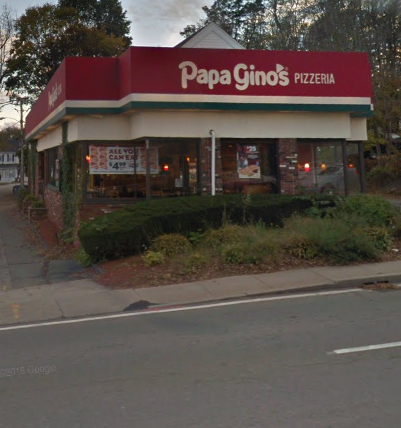

|  |
I had my first job this year, and it was an overall fun experience. My coworkers were nice, my boss liked me, I worked hard and it gave me something to do with my free time, as well as money. It went well, and my boss even claimed she was planning on promoting me once I turned 18, as I needed to be 18 for the position. This job didn't last too long, as shortly after I joined many locations shut down, including the one that I worked at, leaving me with no job. After that, my life started getting more stressful and I had less and less free time, meaning I couldn't get a new one. School became harder, robotics really started and I had that most days, and personal stuff came up |
|
As the previous box started to describe, some personal stuff came up this year. One of my closest friends started suffering more and more from their abusive family. I was their only light at the end of the tunnel, their last strand of hope, which I didn't mind. My regret here is that I had to help him, as in his family was bad, I do not regret helping him at all. As of right now, he's not allowed to talk to me or use any of his usual coping mechanisms, but he's hanging on, and trying to stay strong for me. Again, to clarify, my regret is not that Ihelped them. My regret is that they're in a situation that makes them need help |